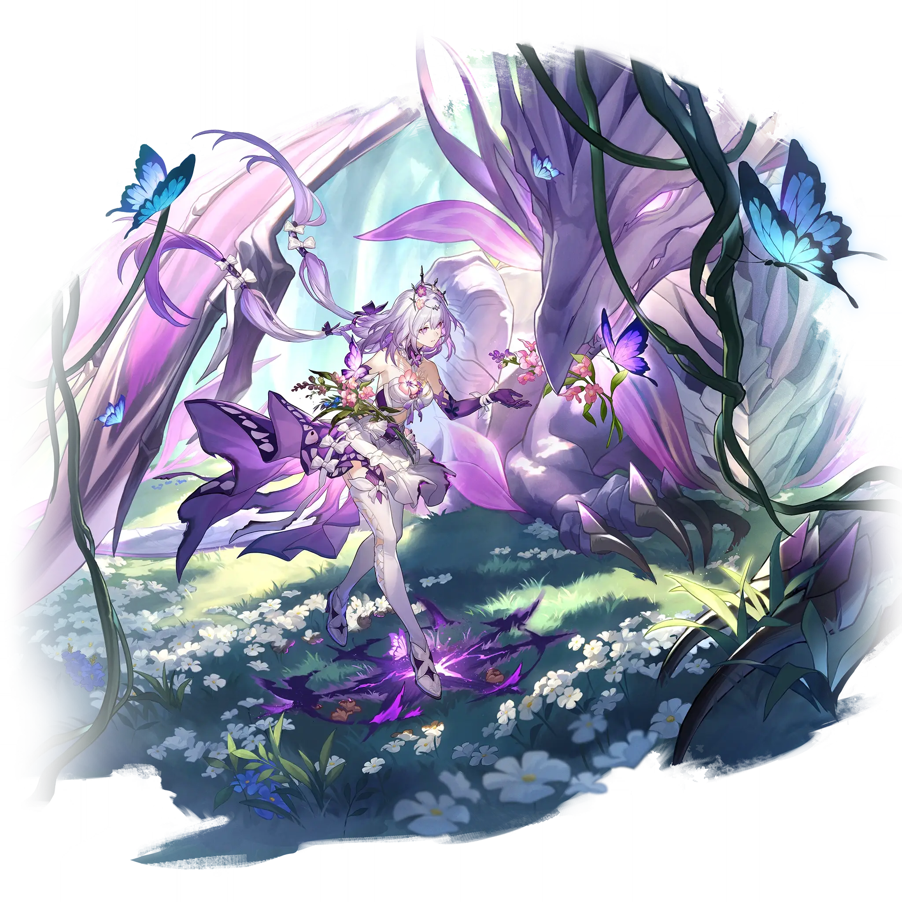

Castorice
Best Castorice build guide for Honkai Star Rail. See Castorice's best Relics, Light Cones, teams, Eidolons, Trace priority, and how to play Castorice.
🔍 Detail Skill
Semua skill aktif dan pasif beserta efeknya.
Deals Quantum DMG equal to #1[i]% of Castorice's Max HP to one designated enemy.
Consumes 30% of all allies' current HP. Deals Quantum DMG equal to #1[i]% of Castorice's Max HP to one designated enemy and Quantum DMG equal to #2[i]% of Castorice's Max HP to adjacent targets. If current HP is insufficient, this ability will reduce HP to 1. If Netherwing is on the battlefield, this Skill becomes "Boneclaw, Doomdrake's Embrace" instead.
Consumes 40% of all allies' (except Netherwing) current HP. Castorice and Netherwing launch a Joint ATK on the target and deal Quantum DMG equal to #1[i]% and #2[i]% of Castorice's Max HP to all enemies. If current HP is insufficient, using the ability will reduce HP to 1.
Max "Newbud" is based on all characters' levels on the battlefield. For each point of HP lost by all allies, Castorice gains 1 point of "Newbud." When "Newbud" reaches its maximum, Castorice's Ultimate can be used. When allies lose HP, Castorice's and Netherwing's DMG dealt increase by #1[i]%. This effect can stack up to 3 times, lasting for 3 turn(s). When Netherwing is on the field, "Newbud" can
After obtaining Castorice or when Castorice is in the current team, receive the following effect: In battle, when an ally character receives a killing blow, all ally characters that received a killing blow in this action enter the "Mooncocoon" state. Characters in "Mooncocoon" temporarily delay becoming downed and can take actions normally. After the action, if their present HP increases, or if th
Deals Quantum DMG equal to #1[i]% of Castorice's Max HP to all enemies.
⚔ Light Cone Terbaik
Diurutkan dari yang paling kuat. Persentase menunjukkan performa relatif terhadap pilihan terbaik.
💎 Relic Set Terbaik
Set terbaik untuk karakter ini, diurutkan berdasarkan prioritas.
📊 Stat Utama
Stat yang dicari pada tiap slot.
👥 Tim yang Direkomendasikan
Karakter yang sering dipasangkan bersama Castorice.
 Hyacine
Hyacine
 March 7th • Evernight
March 7th • Evernight
 Cyrene
Cyrene
 Mortenax Blade
Mortenax Blade
 Tribbie
Tribbie
🔗 Lanjutkan
Build ini dirangkum dari Prydwen Institute. Starwise tidak menghitung sendiri. Angka bisa berubah setelah patch atau karakter baru rilis.